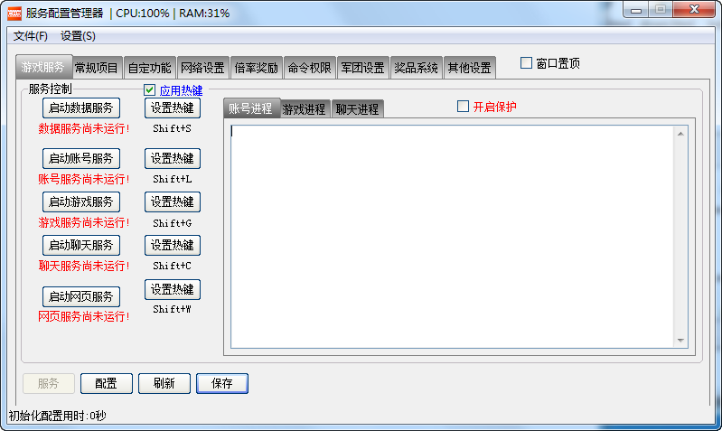

aionemu chs aionemu
版本介绍：
1、升级奖励系统：
可以自定义设置6个不同等级以及奖励物品，数量 和 升级后系统提示的信息。
例如： 设置 50级 奖励100瓶药水 或者 基纳 神石 武器 等 , 提示消息为 “恭喜你升级到50级，你现在可以进入黑暗副本了”，当玩家升级到50后系统会自动发送你设置的消息，然后物品直接发送到他的背包。
2、冲级奖励系统：
比较适合开新服或者开新区。可以自定义设置前多少名升级到多少级后系统自动赠送某某东西或者套装（其中套装是按职业自动发放的），并且全服提示:恭喜玩家【XXX】第X个升级到XX级，系统自动赠送一套装给他，目前还剩余X个名额，未达到XX级的玩家可要加油了。
3、其他杀人提示、组队杀BOSS提示、修复交易BUG、卡双职业、卡技能等一些常见BUG。
4、积分系统 五个会员等级加完善版积分商城系统.
5、上线职业提示,积分提示,会员等级提示.
6、宠物系统（官方2.0的有详细介绍 不在多说）
7、风道系统.完美实现要塞战、
8、实体功能完美实现、Aion Chs 重磅出击！
9、NPC自动讲话（NPC像玩家一样自动和你对话.）
10、军团图章上传（私服也可以修改你的军团图章！）
11、龙界BOSS 怪物 刷新 爆率完美匹配官方参数.（私服参数可以调）
12、去除玩家打命令传输的“畸形功能”实现全部界面操作
13、龙界地图风道功能的完美实现（进入风道玩家可以控制方向 自动飞行.）
14、双手武器合成.（不多介绍了大家都知道怎么回事）.

AionChs 一直以来没能出一个完整的私服版本.今AionCHS 团队 无限团结合作.经过努力.终于出一套市面上最完整，功能花样最多的商业版本.简称”CA2010”其中包含一键式的安装环境.控制平台.和傻瓜式的帮助手册.版本修改全程操控界面完成！让GM彻底摆脱开服不懂JAVA技术的难题.！
(由于在国内开服人太多了,做为团队不能免费为他们提供技术服务.如果你需要开服那么你需要授权,如果你是单机用户无限制)
AionChs商业客户群：22213222


首先欢迎您使用Ac版永恒纪元模拟器，模拟器由团队几个成员共同维护和更新为大家提供一个修复和生成完成的单机娱乐版本。如果你需要开外网和朋友一起玩，需要进行外网认证。
同时友情提示大家版本只供个人娱乐使用，请勿商业用途。
由于版本更新有时最新版本可能存在未知BUG，如果你发现存在恶重BUG可以下载旧版本.
安装和更换版本之前注意备份原先版本和游戏数据，防止造成不必要损失.
9:00 23:00 :-)
请联系在线客服为您提供远程服务!